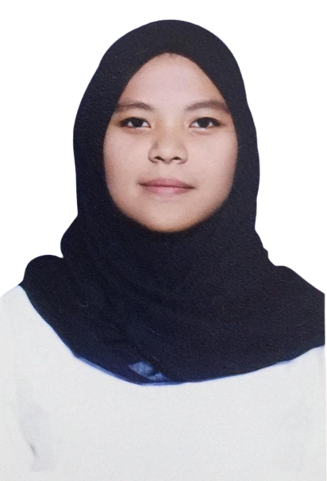

Membangun Kecintaan Terhadap Perpustakaan : Menggapai Imajinasi, Inspirasi, dan Kreativitas melalui Cerita dan Warna
Oleh : Wulan Nur Afrilia

Literasi masyarakat Indonesia menunjukkan kondisi yang kurang menggembirakan. Menurut data PISA-OECD 2019, Indonesia berada di urutan ke-62 dari 70 negara. UNESCO tahun 2016 menyebutkan bahwa hanya satu dari 1000 warga Indonesia yang rajin membaca. Sementara itu, rata-rata masyarakat Indonesia menghabiskan waktu 1,6 jam untuk membaca dan 3,3 jam untuk menjelajahi internet, sebagaimana dilaporkan oleh Perpusnas.
Untuk memacu semangat membaca sejak usia muda, Perpustakaan Istiqlal bersama dengan Mahasiswa Fakultas Ilmu Keperpustakaan dari UIN Syarif Hidayatullah Jakarta dan Republika Penerbit mengadakan acara kunjungan ke perpustakaan pada Rabu, 14 Juni 2023. Acara tersebut dihadiri oleh siswa dan siswi kelas 1 & 2 Madrasah Ibtidaiyah Istiqlal.

Acara dengan tema "Membangun Kecintaan Terhadap Perpustakaan" dilaksanakan dengan serangkaian kegiatan yang bertujuan meningkatkan literasi. Setelah menjelajahi perpustakaan dan melihat berbagai koleksi buku, para siswa mendengarkan cerita dari Kak Dimas. Dengan dukungan dari boneka sebagai alat peraga, ia mampu membuat para peserta tertawa. Keseruan acara tak berhenti di situ, ketika panitia membagikan lembaran gambar berbagai hewan lucu yang siap diwarnai oleh para peserta.
Kegiatan ini diharapkan dapat memotivasi anak-anak agar lebih antusias dalam membaca, menulis, dan mengungkapkan diri melalui kesenian. Tujuannya adalah untuk mendukung perkembangan imajinasi, kreativitas, dan kemampuan berpikir kritis mereka, yang nantinya akan sangat berguna dalam kehidupan sehari-hari.
| No. | Waktu | Kegiatan |
| 1. | 08.30-08.45 | Registrasi |
| 2. | 08.45-08.50 | Pembukaan |
| 3. | 08.50-09.00 | Sambutan Kepala Peprustakaan Istiqlal |
| 4. | 09.00-09.20 | Tur Perpustakaan Istiqlal |
| 5. | 09.20-10.00 | Storytelling |
| 6. | 10.00-10.40 | Lomba Mewarnai |
| 7. | 10.40-11.20 | Games dan Pengumuman Lomba |
| 8. | 11.20-11.30 | Penutup |
Sumber Rujukan : https://temubaca.republika.co.id/
Yang mengerjakan tugas ini :
| Nama | : | Wulan Nur Aprilia |
|---|---|---|
| NIM | : | 11210251000051 |
| Kelas | : | 5A / Ilmu Perpustakaan |
|  |